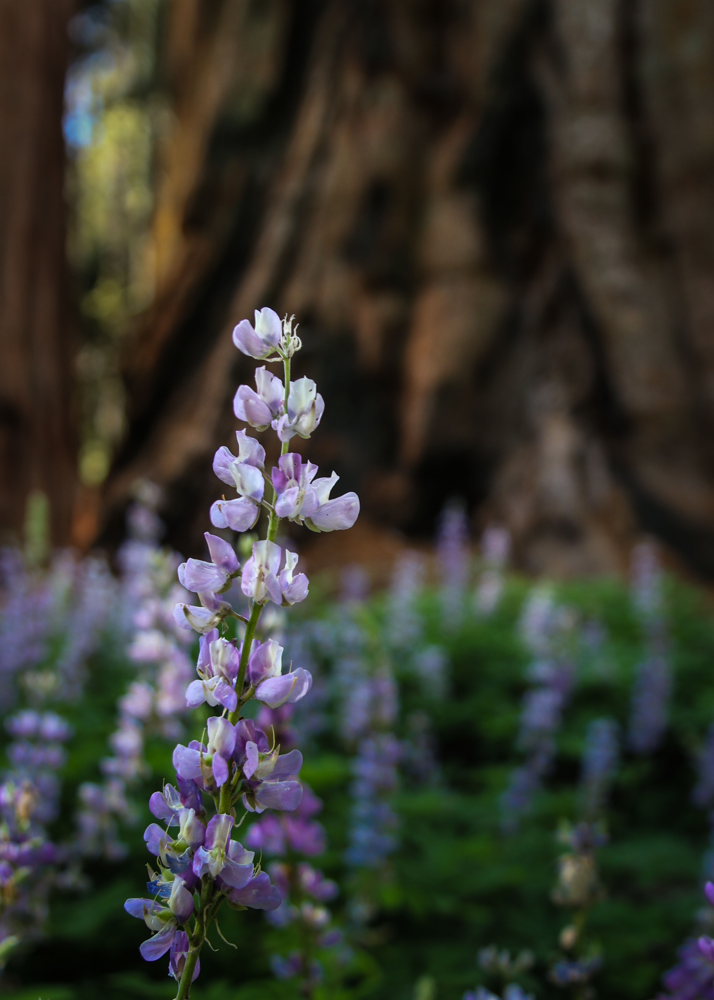
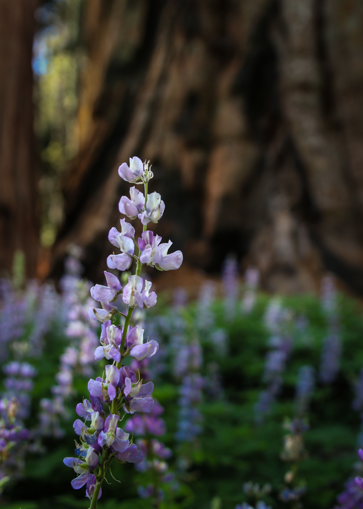
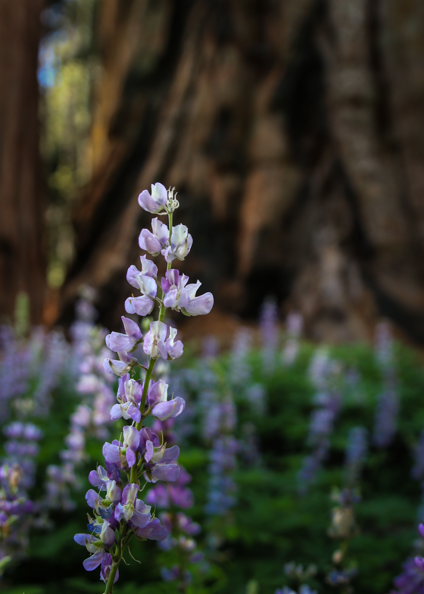

Photography & Timelapse
Hi and welcome to my websight. I am a photographer and videographer from the Fresno area. I have a degree in Media Communications and Journalism and curently work in a local news room.
I love to create, in many form. I like to take photos and capture timelapses as I travel. I enjoy hiking in the sierra nevada.
Keep an eye out for any up coming projects
